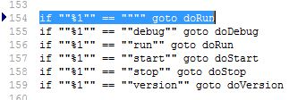
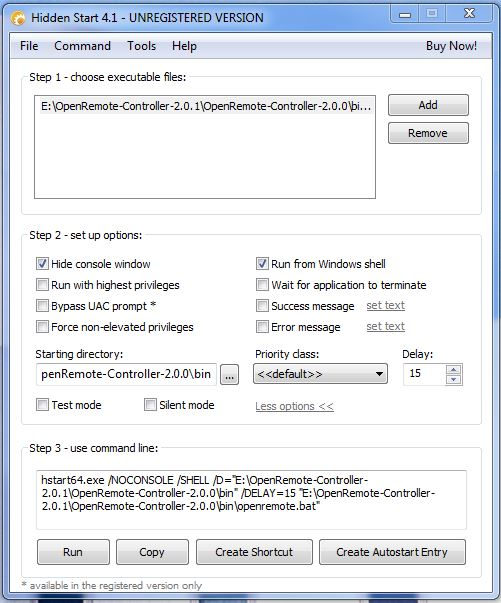

Hello noble community.
For once I am not posting a "how do i?", but instead a "how to..."
For a couple of years I have been using OR for my general Home automation and Home security applications, but a recent change of my home PC forced me to try to tidy things up a bit. More notably here, I was always a little disappointed at having a minimised Command Window (DOS box) on my Desktop after starting up the OR Controller with every PC Restart.
Now, I know there are several ways round this - some people may have put the OR Startup into a Service for example. However, I have opted for something slightly different, and I thought I would share it with you.
Step 1:
Edit your openremote.bat file that came with your Openremote Controller files (you'll find it in ~./bin), you need to add the line that I have highlighted in the right place. This change will mean that you don't need to issue a command line parameter for OpenRemote.bat to start up - it will default to "run"

Step 2:
Install a piece of software calle HStart.. http://www.ntwind.com/software/hstart.html. It's a small installation (actually, it's not an installation at all... rather a zip of some files). Unpack the five files into an appropriate folder and run the executable called "HstartUI.exe".
Step 3:
Configure HStartUI as per the below (tailoring for your particular pathnames etc), and selecting the OpenRemote Batch File as the executable. NOTE: Don't forget the "Delay"... I found 10 seconds or more works.

Step 4:
Test this by pressing "run". In your task manager you should find a new Java process, and an HStart (32 or 64) process. All being well, go to your IE and navigate to <your IP Address>:8080/controller.
Step 5:
Assuming Step 4 works, go back to your HStartUI window and press "Create Autostart Entry". This will put the startup in your registry and will launch every time your PC boots.
Hope this helps.... no more minimised Console Window 
{kind=link}
{kind=link}
{kind=link}
{kind=link}